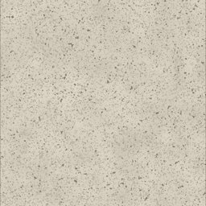
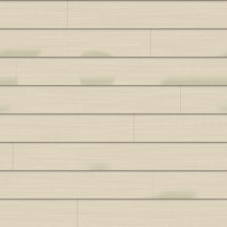

← All scout pages · Public copy, pages as of 2026-10-16 23:41. A Poly Haven prospect shows our own copy of its CC0 colour map, flat and unlit (Poly Haven’s previews are not CC0; its page has the lit one). The offline 3D viewer stays on the owner’s machine.
Synthetic and modern scout — CC0 prospects
Every row in the Shape gallery's Synthetic and modern category that is code-drawn or flagged OUTLIER, with up to three CC0 prospects from Poly Haven and ambientCG. Real photos are preferred; a generated (computer-made) set is listed only when neither library has a photo of that look, and it is marked. Built 2026-10-16 by scout synthetic. The rows under “Pulled” at the bottom were downloaded at full size on your word; the rest of the page changes nothing in the game.
3D: an ambientCG prospect's picture opens ambientCG's own 3D preview; a Poly Haven prospect's page has its 3D preview. Our offline viewer of the game's own maps is not on this public copy.
3rows still to choose (of 6 scouted, 71 in Synthetic and modern)
3with at least one prospect
1with a real-photo prospect
2generated only
3pulled, awaiting your review
Left out: Composite decking (code-drawn from drawn by code: dino_game_rnd/surface_gen/gen_synthetic_composite_decking.py, not an outlier), Housewrap / vapour barrier (code-drawn from drawn by code: dino_game_rnd/surface_gen/gen_synthetic_housewrap_vapour_barrier.py, not an outlier), Plastic panel, coloured (code-drawn from drawn by code: dino_game_rnd/surface_gen/gen_synthetic_plastic_panel_coloured.py, not an outlier), Plastic, black (code-drawn from drawn by code: dino_game_rnd/surface_gen/gen__dyed_plastic.py (the same picture tinted #0a0a0a), not an outlier), Plastic, blue (code-drawn from drawn by code: dino_game_rnd/surface_gen/gen__dyed_plastic.py (the same picture tinted #184ded), not an outlier), Plastic, charcoal (code-drawn from drawn by code: dino_game_rnd/surface_gen/gen__dyed_plastic.py (the same picture tinted #1f1f1f), not an outlier), Plastic, dark blue (code-drawn from drawn by code: dino_game_rnd/surface_gen/gen__dyed_plastic.py (the same picture tinted #11245d), not an outlier), Plastic, dark green (code-drawn from drawn by code: dino_game_rnd/surface_gen/gen__dyed_plastic.py (the same picture tinted #115d17), not an outlier), Plastic, dark grey (code-drawn from drawn by code: dino_game_rnd/surface_gen/gen__dyed_plastic.py (the same picture tinted #555555), not an outlier), Plastic, dark lime (code-drawn from drawn by code: dino_game_rnd/surface_gen/gen__dyed_plastic.py (the same picture tinted #3d5d11), not an outlier), Plastic, dark magenta (code-drawn from drawn by code: dino_game_rnd/surface_gen/gen__dyed_plastic.py (the same picture tinted #5d1146), not an outlier), Plastic, dark orange (code-drawn from drawn by code: dino_game_rnd/surface_gen/gen__dyed_plastic.py (the same picture tinted #5d3411), not an outlier), Plastic, dark red (code-drawn from drawn by code: dino_game_rnd/surface_gen/gen__dyed_plastic.py (the same picture tinted #5d1111), not an outlier), Plastic, dark sky blue (code-drawn from drawn by code: dino_game_rnd/surface_gen/gen__dyed_plastic.py (the same picture tinted #11465d), not an outlier), Plastic, dark teal (code-drawn from drawn by code: dino_game_rnd/surface_gen/gen__dyed_plastic.py (the same picture tinted #115d50), not an outlier), Plastic, dark violet (code-drawn from drawn by code: dino_game_rnd/surface_gen/gen__dyed_plastic.py (the same picture tinted #34115d), not an outlier), Plastic, dark yellow (code-drawn from drawn by code: dino_game_rnd/surface_gen/gen__dyed_plastic.py (the same picture tinted #5d5311), not an outlier), Plastic, deep blue (code-drawn from drawn by code: dino_game_rnd/surface_gen/gen__dyed_plastic.py (the same picture tinted #0f36ab), not an outlier), Plastic, deep green (code-drawn from drawn by code: dino_game_rnd/surface_gen/gen__dyed_plastic.py (the same picture tinted #0fab1c), not an outlier), Plastic, deep lime (code-drawn from drawn by code: dino_game_rnd/surface_gen/gen__dyed_plastic.py (the same picture tinted #6aab0f), not an outlier), Plastic, deep magenta (code-drawn from drawn by code: dino_game_rnd/surface_gen/gen__dyed_plastic.py (the same picture tinted #ab0f7c), not an outlier), Plastic, deep orange (code-drawn from drawn by code: dino_game_rnd/surface_gen/gen__dyed_plastic.py (the same picture tinted #ab580f), not an outlier), Plastic, deep red (code-drawn from drawn by code: dino_game_rnd/surface_gen/gen__dyed_plastic.py (the same picture tinted #ab0f0f), not an outlier), Plastic, deep sky blue (code-drawn from drawn by code: dino_game_rnd/surface_gen/gen__dyed_plastic.py (the same picture tinted #0f7cab), not an outlier), Plastic, deep teal (code-drawn from drawn by code: dino_game_rnd/surface_gen/gen__dyed_plastic.py (the same picture tinted #0fab91), not an outlier), Plastic, deep violet (code-drawn from drawn by code: dino_game_rnd/surface_gen/gen__dyed_plastic.py (the same picture tinted #580fab), not an outlier), Plastic, deep yellow (code-drawn from drawn by code: dino_game_rnd/surface_gen/gen__dyed_plastic.py (the same picture tinted #ab960f), not an outlier), Plastic, graphite (code-drawn from drawn by code: dino_game_rnd/surface_gen/gen__dyed_plastic.py (the same picture tinted #373737), not an outlier), Plastic, green (code-drawn from drawn by code: dino_game_rnd/surface_gen/gen__dyed_plastic.py (the same picture tinted #18ed2a), not an outlier), Plastic, grey (code-drawn from drawn by code: dino_game_rnd/surface_gen/gen__dyed_plastic.py (the same picture tinted #757575), not an outlier), Plastic, light blue (code-drawn from drawn by code: dino_game_rnd/surface_gen/gen__dyed_plastic.py (the same picture tinted #7b9af7), not an outlier), Plastic, light green (code-drawn from drawn by code: dino_game_rnd/surface_gen/gen__dyed_plastic.py (the same picture tinted #7bf785), not an outlier), Plastic, light grey (code-drawn from drawn by code: dino_game_rnd/surface_gen/gen__dyed_plastic.py (the same picture tinted #b9b9b9), not an outlier), Plastic, light lime (code-drawn from drawn by code: dino_game_rnd/surface_gen/gen__dyed_plastic.py (the same picture tinted #c3f77b), not an outlier), Plastic, light magenta (code-drawn from drawn by code: dino_game_rnd/surface_gen/gen__dyed_plastic.py (the same picture tinted #f77bd2), not an outlier), Plastic, light orange (code-drawn from drawn by code: dino_game_rnd/surface_gen/gen__dyed_plastic.py (the same picture tinted #f7b57b), not an outlier), Plastic, light red (code-drawn from drawn by code: dino_game_rnd/surface_gen/gen__dyed_plastic.py (the same picture tinted #f77b7b), not an outlier), Plastic, light sky blue (code-drawn from drawn by code: dino_game_rnd/surface_gen/gen__dyed_plastic.py (the same picture tinted #7bd2f7), not an outlier), Plastic, light teal (code-drawn from drawn by code: dino_game_rnd/surface_gen/gen__dyed_plastic.py (the same picture tinted #7bf7e2), not an outlier), Plastic, light violet (code-drawn from drawn by code: dino_game_rnd/surface_gen/gen__dyed_plastic.py (the same picture tinted #b57bf7), not an outlier), Plastic, light yellow (code-drawn from drawn by code: dino_game_rnd/surface_gen/gen__dyed_plastic.py (the same picture tinted #f7e77b), not an outlier), Plastic, lime (code-drawn from drawn by code: dino_game_rnd/surface_gen/gen__dyed_plastic.py (the same picture tinted #94ed18), not an outlier), Plastic, magenta (code-drawn from drawn by code: dino_game_rnd/surface_gen/gen__dyed_plastic.py (the same picture tinted #ed18ad), not an outlier), Plastic, mid grey (code-drawn from drawn by code: dino_game_rnd/surface_gen/gen__dyed_plastic.py (the same picture tinted #969696), not an outlier), Plastic, off-white (code-drawn from drawn by code: dino_game_rnd/surface_gen/gen__dyed_plastic.py (the same picture tinted #f7f7f7), not an outlier), Plastic, orange (code-drawn from drawn by code: dino_game_rnd/surface_gen/gen__dyed_plastic.py (the same picture tinted #ed7c18), not an outlier), Plastic, pale blue (code-drawn from drawn by code: dino_game_rnd/surface_gen/gen__dyed_plastic.py (the same picture tinted #d3deff), not an outlier), Plastic, pale green (code-drawn from drawn by code: dino_game_rnd/surface_gen/gen__dyed_plastic.py (the same picture tinted #d3ffd7), not an outlier), Plastic, pale lime (code-drawn from drawn by code: dino_game_rnd/surface_gen/gen__dyed_plastic.py (the same picture tinted #edffd3), not an outlier), Plastic, pale magenta (code-drawn from drawn by code: dino_game_rnd/surface_gen/gen__dyed_plastic.py (the same picture tinted #ffd3f3), not an outlier), Plastic, pale orange (code-drawn from drawn by code: dino_game_rnd/surface_gen/gen__dyed_plastic.py (the same picture tinted #ffe8d3), not an outlier), Plastic, pale red (code-drawn from drawn by code: dino_game_rnd/surface_gen/gen__dyed_plastic.py (the same picture tinted #ffd3d3), not an outlier), Plastic, pale sky blue (code-drawn from drawn by code: dino_game_rnd/surface_gen/gen__dyed_plastic.py (the same picture tinted #d3f3ff), not an outlier), Plastic, pale teal (code-drawn from drawn by code: dino_game_rnd/surface_gen/gen__dyed_plastic.py (the same picture tinted #d3fff9), not an outlier), Plastic, pale violet (code-drawn from drawn by code: dino_game_rnd/surface_gen/gen__dyed_plastic.py (the same picture tinted #e8d3ff), not an outlier), Plastic, pale yellow (code-drawn from drawn by code: dino_game_rnd/surface_gen/gen__dyed_plastic.py (the same picture tinted #fffad3), not an outlier), Plastic, red (code-drawn from drawn by code: dino_game_rnd/surface_gen/gen__dyed_plastic.py (the same picture tinted #ed1818), not an outlier), Plastic, silver (code-drawn from drawn by code: dino_game_rnd/surface_gen/gen__dyed_plastic.py (the same picture tinted #d9d9d9), not an outlier), Plastic, sky blue (code-drawn from drawn by code: dino_game_rnd/surface_gen/gen__dyed_plastic.py (the same picture tinted #18aded), not an outlier), Plastic, teal (code-drawn from drawn by code: dino_game_rnd/surface_gen/gen__dyed_plastic.py (the same picture tinted #18edca), not an outlier), Plastic, violet (code-drawn from drawn by code: dino_game_rnd/surface_gen/gen__dyed_plastic.py (the same picture tinted #7c18ed), not an outlier), Plastic, white (code-drawn from drawn by code: dino_game_rnd/surface_gen/gen__dyed_plastic.py (the same picture tinted #ffffff), not an outlier), Plastic, yellow (code-drawn from drawn by code: dino_game_rnd/surface_gen/gen__dyed_plastic.py (the same picture tinted #edd118), not an outlier), Rigid foam insulation (code-drawn from drawn by code: dino_game_rnd/surface_gen/gen_synthetic_rigid_foam_insulation.py, not an outlier), Spray foam (code-drawn from drawn by code: dino_game_rnd/surface_gen/gen_synthetic_spray_foam.py, not an outlier).
Now in the game code-drawn drawn by code: dino_game_rnd/surface_gen/gen_synthetic_fibreglass.py Thumbnail: the game's drawn picture
No fibreglass in either library, photo or computer-made. Fabric010 (computer-made) is a woven olive-and-cream cloth like woven glass-fibre roving; our drawing is the random chopped-strand mat, which neither library has. Weak fit.
Now in the game code-drawn drawn by code: dino_game_rnd/surface_gen/gen_synthetic_rubber_sheet.py Thumbnail: the game's drawn picture
Real photos of rubber surfaces: rubber_tiles is black rubber floor squares (with joints our sheet lacks); running_track a grey-blue sheet; rubberized_track red.
Rows where you chose a candidate and it was downloaded. Each one is in the Shape gallery's Under Review lane and the lighting lab; your pick is marked. A rejected one comes back up to the main list.
04
Laminate counter panel
synthetic_laminate_counter_panel

Now in the game code-drawn drawn by code: dino_game_rnd/surface_gen/gen_synthetic_laminate_counter_panel.py Thumbnail: the game's drawn picture
Pulled 2026-10-16. Under review — in the Shape gallery's Under Review lane and on the lighting lab's UNDER REVIEW building. Say approve or reject with the look's name. Lighting lab sheet (on the owner’s machine only).
No laminate counter photo, but Terrazzo019 is a real photo of beige stone with fine dark speckle that reads like our counter laminate. S and M are the same photo at two scales; S has the closer fleck size.
Now in the game code-drawn drawn by code: dino_game_rnd/surface_gen/gen_synthetic_plastic_panel_white.py Thumbnail: the game's drawn picture
Pulled 2026-10-16. Under review — in the Shape gallery's Under Review lane and on the lighting lab's UNDER REVIEW building. Say approve or reject with the look's name. Lighting lab sheet (on the owner’s machine only).
No photo of white plastic panel in either library (ambientCG's only real-photo plastics are dark blue and dark brown). Computer-made white plastics shown; 013B has faint scuffs like ours.
The picture opens our 3D viewer — under review for facility_clean_room_wall_panel (on the owner’s machine only)
06
Vinyl siding
synthetic_vinyl_siding

Now in the game code-drawn drawn by code: dino_game_rnd/surface_gen/gen_synthetic_vinyl_siding.py Thumbnail: the game's drawn picture
Pulled 2026-10-16. Under review — in the Shape gallery's Under Review lane and on the lighting lab's UNDER REVIEW building. Say approve or reject with the look's name. Lighting lab sheet (on the owner’s machine only).
No vinyl as such, but WoodSiding009 is a real photo of cream-painted lap siding, almost our drawing. exterior_wall_cladding_02 is narrow red-brown lap boards; white_planks_clean is white-painted boards running up and down (a turn fixes it).
CC0 License — CC0 1.0 Universal - public domain dedication, no attribution required
Credit
Rob Tuytel; Unlocked by the Community 🎉 This asset was locked in the Wood Works Vault until our patrons reached its funding goal and freed it for everyone. Unlocked August 11, 2026 Help Unlock the Next Vault


 CC0 colour map · our copy
CC0 colour map · our copy